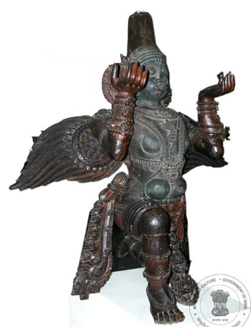

उद्यान वर्षमा दुई पटक अर्थात् फेब्रुअरी र सेप्टेम्बर महिनामा जाडो र ग्रीष्मकालीन वार्षिक रूपमा विशाल प्रकारका साथ खुल्छ ।
१५ एकड क्षेत्रफलमा फैलिएको अमृत उद्यानलाई राष्ट्रपति भवनको आत्माको रूपमा चित्रित गरिएको छ। मूलतः, यसमा पूर्वी लन, सेन्ट्रल लन, लङ गार्डेन र सर्कुलर गार्डेन समावेश थियो। अब्दुल कलाम र श्री रामनाथ कोविन्दको कार्यकालमा हर्बल-१, हर्बल-२, स्पर्श उद्यान, बोन्साई गार्डेन र आरोग्य वनम जस्ता बगैंचाहरूको विकास गरिएको थियो
उद्यान उत्सव २०२४ को यो संस्करण एक भूदृश्य चमत्कार हुनेछ जहाँ आगन्तुकहरूले घण्टी फूल , डाफोडिल्स, एशियाटिक लिली, ओरिएन्टल लिली र अन्य धेरै दुर्लभ मौसमी फूलहरू पूर्ण महिमामा देख्न सक्दछन्। मुख्य आकर्षण ट्युलिप्सको सुन्दर पुष्प नमुना र गुलाबको १०० भन्दा बढी प्रजातिहरू हुनेछन्।
यसबाहेक, आगन्तुकहरूले धेरै आकर्षणहरूमा समय बिताउन सक्दछन्, बच्चाहरूको लागि विशेष रूपमा क्युरेट गरिएको बगैंचा बाल वाटिका भनिन्छ जुन २२५ वर्ष पुरानो शीशमको रूखको कथा, एक ट्रीहाउस, प्रकृतिको कक्षा कोठा आदिको कथा हो। त्यसपछि त्यहाँ विभिन्न प्रकारका वनस्पति र जीवजन्तुहरूको साथ बोन्साई, सर्कुलर गार्डेनहरू छन्। त्यहाँ एक खाजाघर पनि छ जहाँ आगन्तुकहरूले खाजा खान र चलिरहेको प्रदर्शनीहरू हेर्न सक्दछन्।

The exquisite Garuda figure is a wood carving from Vijayanagara period, stylistically belonging to temple architecture of the late 18th century. Garuda is the ‘vahana’ or vehicle of Lord Vishnu of the Hindu trinity. The figure is kneeling with hands elevated with upturned palms. He is bedecked with jewellery and wearing a ‘mukuta’ or crown which adds to the splendour of this sculpture. Ears are decorated with flower designs and the stretched wings are delicately chiselled in a quill style carving. The chest, stomach and face have been covered with a three separate thin sheets of metal. The figure is carved out of teak wood and it measures 173.5 cm high.
ve`r m|ku nks+ cks+Nks+jjs ckj /kko] Qjojh vkj flracj tks+[ksu] js;kM+ vkj xks+jks+ejs cks+Nks+j js;kd~ vk;ekysdku vkj vk;ek Qk;yko jks+dks+e lk¡o f>tqd~vkA
15 ,dM+ js;kd~ ekjk³ tk;xkjs Qk;ykokdku uksvk m|ku nks+ jk"Vªifr Hkou js;kd~ vkRek ysdkrs lks+nks+jks+d~vk] vkj uksvk mnqd~nks+ iqjk+iqjh xkuks+d~ xs;kA ,rks+gks+i~js nks+ uksvkjs bZLV ykWu] lsaVªy ykWu] ykWUx xkMZu vkj ldqZyj xkMZu lsysr~ rkgsadkukA ykgkjsu jk"Vªifr MkW- ,- ih- ts- vCnqy dyke vkj Jh jkeukFk dksfoankd~ dk+eh vks+drsjs gcZy&1] gcZy&2] VsDVkby xkMZu] cksalkbZ xkMZu vkj vkjksX; oue ysdku ukok¡ m|ku js;kd~ mruk+m gks;sukA
m|ku mRlo 2024 js;kd~ uksvk laLdj.k nks+ fer~ vks+r csd~uko js;kd~ gkgkM+k ik+jrqy gks;ksd~vk] vks.Ms nks+ fgtqd~ gks+M+ V~;wfyi] MsQksfMy] ,fÓ;kfVd fyyh] vksfj,aVy fyyh vkj vk;ek ,Vkd~ ck³ Gke gks+nks+d~ ckgkdks vk+Mh dqlhrsdks Gsy nkM+s;kd~vkA uksvk mRlo js;kd~ vklks+y eks+us vks+jks+d~vkd~ gks;ksd~vk V~;wfyi js;kd~ vk+Mh eksat ckgk iSVuZ vkj xqyk+c ckgk js;kd~ 100 [kks+u ck+M+rh jks+dks+eA
buk+ NkMkdkrs] fgtqd~ gks+M+ vk;ekysdku eks+us vks+d~vks+j ftfulrs eks+usdks ckgyko nkM+s;kd~vk& fclsldkrs fxnjk+ yk+fxr~ csukokdku cky okfVdk] vksukjs nks+ 225 cks+Nks+j ekjs fÓÓq nkjs js;kd~ dkFkk] nkjs vksM+kd~] fljtks+u ck×pko ,eku lsysr~ esukd~vkA vkjgksa esukd~vk cksalkbZ ldZqyj xkMZu] vksukjs nks+ nkjs vkj tkuokjdksokd~ vk;ek Js.kh Gsy Gkeks+d~vkA uks.Ms fer~Vsu QwM dksVZ gksa esukd~vk] vks.Ms nks+ fgtqd~ gks+M+ vk+Mh lscsy tks+ekd~dks tks+e nkM+s;kd~vk vkj gks;ksd~dku izksnksjluh gks+rsrs eks+usdks ckgyko nkM+s;kd~vkA
اديان سال ۾ ٻه ڀيرا يعني فيبروري ۽ سيپٽمبر جي مهيني ۾ سياري ۽ گرمي جي سالياني جي وسيع قسمن سان کلندو آهي
15 ايڪڙن جي وسيع پکيڙ ۾ پکڙيل امرت اديان کي اڪثر ڪري راشٹرپتی بھون جي روح جي حيثيت سان پيش ڪيو ويو آهي ، ۽ ان جي لائق آهي. اصل ۾ ان ۾ ايسٽ لان، سينٽرل لان، لانگ گارڈن ۽ سرڪلر گارڊن شامل هئا. اڳوڻي صدرن ڈاکٹر اي پي جي عبدالڪلام ۽ شري رام ناٿ ڪووند جي دور ۾ وڌيڪ باغ تيار ڪيا ويا، جن ۾ هربل-1، هربل-2، ٽائيٽل گارڊن، بونسائي گارڊن ۽ آروگيه وانم شامل آهن.
اديان اتسو 2024 جو هي ايڊيشن هڪ زمين جي تعمير واري عجيب هوندو جتي سياحن کي ٽيولپس، ڊيفوڊيلز، ايشياٽڪ ليلي، اورينٽل ليلي ۽ ٻين ڪيترن ئي نادر موسمي گلن کي مڪمل شان ۾ ڏسي سگهجي ٿو. اهم کشش ٽيولپس جي خوبصورت گلن جي نموني ۽ گلاب جي 100 + قسمن هوندي.
ان کان علاوه، سياح ڪيترن ئي پرڪشش ۾ وقت گذاري سگهن ٿا، ٻارن لاء هڪ خاص طور تي ٺهيل باغ جنهن کي بال واٽيڪا سڏيو ويندو آهي ، جنهن ۾ 225 سالن جي شيشم وڻ، هڪ ٽري هائوس، نيچر جي ڪلاس روم وغيره جي ڪهاڻي آهي. ان کان پوء بونسائي، سرڪلر باغ آهن جن ۾ مختلف قسم نباتات ۽ حيوانات آهن. اتي هڪ متحرک کاڌي جي عدالت پڻ آهي جتي سياحن کي تازگي ۽ جاري نمائشن جي شاهدي ڏئي سگهجي ٿي.
उद्यान वर्सांतल्यान दोन फावट म्हळ्यार फेब्रुवारी आनी सप्टेंबर म्हयन्यांत सुरू जाता आनी तातूंत शिंयाळ्याच्या आनी गिमाच्या वर्सुकी वर्सांच्यो व्हड जाती आसतात.
15 एकरांच्या व्हड वाठारांत पातळिल्ल्या अमृत उद्यानाक चड करून राष्ट्रपती भवनाचो आत्मो म्हूण चित्रीत केलां, आनी पात्र आसा. मुळांत तातूंत ईस्ट लॉन, सेंट्रल लॉन, लाँग गार्डन आनी सर्क्युलर गार्डन हांचो आस्पाव आशिल्लो. आदले राष्ट्रपती डॉ. ए. पी. जे. अब्दुल कलाम आनी श्री रामनाथ कोविंद हांच्या कार्यकाळांत हर्बल-पयलो, हर्बल-दुसरो, स्पर्श बाग, बोनसाय गार्डन आनी आरोग्य वनम अश्यो आनीक बागायती विकसीत जाल्यो.
उद्यान उत्सव 2024 ची ही आवृत्ती एक लँडस्केपींग चमत्कार आसतली जंय पर्यटकांक ट्यूलिप, डॅफोडिल्स, एशियाटिक लिली, ओरिएंटल लिली आनी हेर जायतीं दुर्मीळ हंगामी फुलां पुराय वैभवान पळोवपाक मेळटलीं. मुखेल आकर्शण म्हळ्यार ट्यूलिपांचे सोबीत फुलांचे नमुने आनी गुलाबाचे 100+ प्रकार.
फुडें, भोंवडेकार जायत्या आकर्शणांनी, भुरग्यां खातीर खास तयार केल्ली बाग जाका बाल वाटिका म्हणटात आनी तातूंत 225 वर्सां पिरायेच्या शीशम झाडाची कथा, एक ट्रीहाउस, निसर्गाचो वर्ग आदींत वेळ सारपाक मेळटा. उपरांत बोनसाय, वर्तुळाकार बागायती आसून तातूंत तरेकवार वनस्पत आनी मोनजात आसा. तशेंच एक दोलायमान अन्न न्यायालय आसा जंय भोंवडेकारांक जेवण खावपाक मेळटा आनी चालू आशिल्लीं प्रदर्शनां पळोवंक मेळटात.
یہ خوبصورت گروڈ مجسمہ وجے نگر دور کی لکڑی کی نقاشی ہے، جو 18 ویں صدی کے آخر میں مندر کے فن تعمیر سے تعلق رکھتی ہے۔ گروڑ ہندو تثلیث کے دیوتا وشنو کی 'واہن' یا گاڑی ہے یہ مجسمہ گھٹنوں کے بل جھکا ہوا ہے اور اس کے ہاتھ بلند ہو کر اوپر کی طرف کھلے ہوئے ہیں۔ گَروڑ زیورات سے آراستہ ہے اور اس کے سر پر ایک شاندار "مکُٹ" یا تاج سجا ہوا ہے، جو اس مجسمے کی شان میں اضافہ کرتا ہے۔ کانوں کو پھولوں کے ڈیزائن سے سجایا گیا ہے، جبکہ پر نہایت باریکی سے قلمی انداز میں تراشے گئے ہیں۔۔ سینہ، پیٹ اور چہرے کو تین علیحدہ باریک دھات کی پرتوں سے ڈھانپا گیا ہے۔ یہ مجسمہ ساگوان کی لکڑی سے تراشا گیا ہے اور اس کی اونچائی 173.5 سینٹی میٹر ہے
اُدیان چُھ ؤرِیس منٛز دۄیہِ لَٹہِ یِوان یعنی فروری تہٕ ستمبر کِس رٮ۪تس منٛز ونٛدٕ تہٕ رٮ۪تہٕ کالہِ سالانہٕ کیٚن بٔڑیٚن قٕسمن سۭتۍ ۔
۱۵ کنالہٕ کِس أکِس بٔڑِس پیمانَس پٮ۪ٹھ پھٔلِتھ، امرت اُدیان چھُ اکثر راشٹرپتی بھونٕچ روحٕکۍ پٲٹھۍ پیش یِوان کرنہٕ، تہٕ یہِ چھُ حقدار۔ اصلی اوس اتھ منٛز ایسٹ لان، سینٹرل لان، زیوٗٹھ باغ تہٕ گول باغ شٲمل۔ سٲبقہٕ صدور ڈاکٹر اے پی جے عبدالکلام تہٕ شری رام ناتھ کووند سٕنٛدِس دورس منٛز آیہِ مزید باغ تیار کرنہٕ، یعنے ہربل I، ہربل II، ٹیکٹائل باغ، بونسٲئی باغ تہٕ آروگیہ ونم۔
اُدیان اتسو 2024 ہُک یہِ ایڈیشن آسہِ اکھ لینڈ سکیپنگ عجائب ییٚتہِ سیاح ٹیولپس، ڈیفوڈیلز، ایشیاٹک للی، اورینٹل للی تہٕ باقی واریٛاہ نایاب موسمی پوش پوٗرٕ شان و شوکت سان وُچھِتھ ہٮ۪کَن۔ اہم کشش آسہِ ٹیولپس تہٕ گلابن ہٕنٛدۍ ہتہٕ ہِرۍ قسمن ہٕنٛدۍ خوبصورت پوشن ہٕنٛدۍ نمونہٕ۔
مہِ علاوٕ ہٮ۪کَن سیاح مُختٔلِف پُرکٔشش جاین منٛز وقت گُزٲرِتھ، شُرٮ۪ن خٲطرٕ اکھ خاص طور پٲٹھۍ تیار کرنہٕ آمُت باغ یتھ بال واٹیکا ونان چھِ، یتھ منٛز زٕ ہتھ پُنژٕھ وُہُر پرٛون شیشم کُل، اکھ کُلۍ گرٕ، قۄدرتُک کلاس کمرٕ بیترِ ہٕنٛز دٔلیٖل چھِ۔ اَمہِ پتہٕ چھِ بونسٲئی، سرکلر گارڈن یِمَن منٛز مُختٔلِف قٕسمٕک نباتات تہٕ حیوانات چھِ۔ اَتہِ چھُ اکھ متحرک فوڈ کورٹ تہِ ییٚتہِ سیاح تازٕ ہٮ۪کَن گٔژِتھ تہٕ جٲری نُمٲئشَن ہُنٛد گواہ ہٮ۪کَن بنٲوِتھ۔
उद्यान सालमे दू बेर अर्थात फरवरी आ सितम्बरक मासमे जाड़ आ गर्मीक वार्षिक विभिन्न प्रजातिक फूल सङ्ग फुजैत अछि।
15 एकड़ केर विशाल विस्तारमे पसरल अमृत उद्यानकेँ बहुधा राष्ट्रपति भवनक आत्मा केर रूपमे चित्रित कएल गेल अछि, आ ओ एकर अधिकारी अछि। मूल रूपसँ एहिमे ईस्ट लॉन, सेन्ट्रल लॉन, लॉङ्ग गार्डन आ सर्कुलर गार्डन शामिल छल। पूर्व राष्ट्रपति डॉ. ए.पी.जे. अब्दुल कलाम आ श्री रामनाथ कोविन्दक कार्यकालमे आओर उद्यान विकसित कएल गेल, जेना हर्बल-1, हर्बल-2, टैक्टाइल गार्डन, बोनजाइ गार्डन आ आरोग्य वनम्।
उद्यान उत्सव 2024क ई संस्करण एकटा भूदृश्य चमत्कार हएत जतए आगन्तुक ट्यूलिप, डैफोडिल, एशियाटिक लिली, ओरिएण्टल लिली आ कतेको अन्य दुर्लभ मौसमी फूलकेँ पूर्ण महिमामे देखि सकैताह। मुख्य आकर्षण ट्यूलीपक सुन्नर पुष्प प्रतिरूप आ गुलाबक 100 सँ बेसी प्रजाति रहत।
आगू, आगन्तुक कतेको आकर्षणमे समय बिता सकैत छथि। बाल वाटिका नामक बच्चासभक हेतु विशेष रूपसँ बनाओल गेल उद्यान, जाहिमे 225 साल पुरान शीशम केर गाछक खिस्सा, एकटा ट्री-हाउस, प्रकृतिक कक्षा आदि अछि। तखन बोनजाइ, गोलाकार उद्यान अछि जाहिमे विविध प्रकारक वनस्पति आ जीव-जन्तु अछि। एकटा जीवन्त फूड कोर्ट सेहो अछि जतए आगन्तुक जलपान कऽ सकैत छथि आ चलि रहल प्रदर्शनी देख सकैत छथि।
நேர்த்தியான கருடன் உருவம் விஜயநகர காலத்தைச் சேர்ந்த ஒரு மர சிற்பமாகும், இது பதினெட்டாம் நூற்றாண்டின் பிற்பகுதியின் கோயில் கட்டிடக்கலையுடன் தொடர்பு கொண்டது. கருடன் என்பது இந்து மதத்தின் மும்மூர்த்திகளின் விஷ்ணுவின் ‘ஊர்தி’ அல்லது வாகனமாகும். இந்த உருவம் மண்டியிட்டு கைகளை தூக்கி உள்ளங்கைகளை உயர்த்தியுள்ளது. அவர் நகைகளால் அலங்கரிக்கப்பட்டு, மகுடம் அல்லது கிரீடம் அணிந்திருப்பது இந்த சிற்பத்தின் சிறப்பை அதிகரிக்கிறது. காதுகள் மலர் வடிவமைப்புகளால் அலங்கரிக்கப்பட்டுள்ளன மற்றும் நீட்டப்பட்ட இறக்கைகள் ஒரு குயில் பாணியில் நுட்பமாக செதுக்கப்பட்டுள்ளன. மார்பு, வயிறு மற்றும் முகம் மூன்று தனித்தனி மெல்லிய உலோகத் தகடுகளால் மூடப்பட்டுள்ளன. இந்த உருவம் தேக்கு மரத்தில் செதுக்கப்பட்டுள்ளது மற்றும் இது நூற்று எழுபத்து மூன்று புள்ளி ஐந்து செ.மீ உயரம் கொண்டது.
ಸುಂದರವಾದ ಗರುಡ ವಿಗ್ರಹವು ವಿಜಯನಗರ ಕಾಲದ ಮರದ ಕೆತ್ತನೆಯಾಗಿದ್ದು, 18 ನೇ ಶತಮಾನದ ಉತ್ತರಾರ್ಧದ ದೇವಾಲಯ ವಾಸ್ತುಶಿಲ್ಪಕ್ಕೆ ಸೇರಿದೆ. ಗರುಡ ಹಿಂದೂ ತ್ರಿಮೂರ್ತಿಗಳಲ್ಲಿ ಒಬ್ಬನಾದ ವಿಷ್ಣುವಿನ 'ವಾಹನ' ಅಥವಾ ಸಾಧನವಾಗಿದೆ. ಮೂರ್ತಿಯು ಕೈಗಳನ್ನು ಮತ್ತು ಅಂಗೈಗಳನ್ನು ಮೇಲಕ್ಕೆತ್ತಿ ಮೊಣಕಾಲೂರಿ ಕುಳಿತಿದೆ. ಅವನನ್ನು ಆಭರಣಗಳಿಂದ ಅಲಂಕರಿಸಲಾಗಿದೆ ಮತ್ತು 'ಮುಕುಟಾ' ಅಥವಾ ಕಿರೀಟವನ್ನು ಧರಿಸಿದ್ದಾನೆ, ಇದು ಈ ಶಿಲ್ಪದ ವೈಭವವನ್ನು ಹೆಚ್ಚಿಸುತ್ತದೆ. ಕಿವಿಗಳನ್ನು ಹೂವಿನ ವಿನ್ಯಾಸಗಳಿಂದ ಅಲಂಕರಿಸಲಾಗಿದೆ ಮತ್ತು ಚಾಚಿದ ರೆಕ್ಕೆಗಳನ್ನು ಕ್ವಿಲ್ ಶೈಲಿಯ ಕೆತ್ತನೆಯಲ್ಲಿ ಸೂಕ್ಷ್ಮವಾಗಿ ಕೆತ್ತಲಾಗಿದೆ. ಎದೆ, ಹೊಟ್ಟೆ ಮತ್ತು ಮುಖವನ್ನು ಮೂರು ಪ್ರತ್ಯೇಕ ತೆಳುವಾದ ಲೋಹದ ಹಾಳೆಗಳಿಂದ ಮುಚ್ಚಲಾಗಿದೆ. ಈ ಮೂರ್ತಿಯನ್ನು ತೇಗದ ಮರದಿಂದ ಕೆತ್ತಲಾಗಿದೆ ಮತ್ತು ಇದು 173.5 ಸೆಂ.ಮೀ ಎತ್ತರವನ್ನು ಹೊಂದಿದೆ.
ఈ అద్భుతమైన గరుడ శిల్పం విజయనగర కాలం నాటి చెక్కతో చెక్కబడిన కళాఖండం, శైలిపరంగా 18వ శతాబ్దపు చివరి కాలంనాటి దేవాలయ నిర్మాణ శైలికి చెందినది. గరుడుడు హిందూ త్రిమూర్తులలో ఒకరైన శ్రీ మహావిష్ణువుకు వాహనం. ఈ విగ్రహం మోకాళ్లపై ఉండి, చేతులు పైకెత్తి, అరచేతులు పైకి చూపిస్తోంది. ఇది ఆభరణాలతో అలంకరించబడి, ముకుటం (కిరీటం) ధరించి ఉంది, ఇది ఈ శిల్పానికి మరింత వైభవాన్ని చేకూర్చుతుంది. చెవులు పూల డిజైన్లతో అలంకరించబడ్డాయి మరియు చాచిన రెక్కలు పింఛం (ఈక) శైలిలో సున్నితంగా చెక్కబడ్డాయి. ఛాతీ, కడుపు మరియు ముఖం మూడు వేర్వేరు సన్నని లోహపు రేకులతో కప్పబడి ఉన్నాయి. ఈ విగ్రహం టేకు చెక్కతో చెక్కబడింది మరియు దీని ఎత్తు 173.5 సెం.మీ వరకు. ఉంది.
विजयनगर काल की यह मनोहर गरुड़ प्रतिमा एक लकड़ी की नक्काशी है जो स्थापत्य की दृष्टि से 18वीं शताब्दी के उत्तरार्ध के मंदिर वास्तुकला की शैली से संबंधित है। गरुड़, हिंदू त्रिमूर्ति के भगवान विष्णु के ‘वाहन’ या सवारी हैं। यह मूर्ति घुटनों के बल झुकी हुई है और हाथ ऊपर उठे हुए हैं तथा हथेलियाँ ऊपर की ओर मुड़ी हुई हैं। गरुड़ आभूषणों से सुसज्जित हैं और उन्होंने एक ‘मुकुट’ धारण किया है जो इस मूर्ति की भव्यता को और बढ़ाता है। उनके कानों में फूलों की आकृति वाले आभूषण हैं और पंखों को बड़ी बारीकी से पंखों की नोंक जैसी शैली में तराशा गया है। उनकी छाती, पेट और चेहरा तीन अलग-अलग पतली धातु की परतों से ढका गया है। यह प्रतिमा सागौन की लकड़ी से तराशी गई है और इसकी ऊँचाई 173.5 सेंटीमीटर है।
ଏହି ଚମତ୍କାର ଗରୁଡ ମୂର୍ତ୍ତିଟି ଅଷ୍ଟାଦଶ ଶତାବ୍ଦୀର ଶେଷକାଳର ମନ୍ଦିର ସ୍ଥାପତ୍ୟ କଳା ସହିତ ଜଡ଼ିତ ପ୍ରସିଦ୍ଧ ବିଜୟନଗର ଶୈଳୀର ଏକ କାଷ୍ଠ ମୂର୍ତ୍ତି। ଗରୁଡ଼ ହେଉଛି ହିନ୍ଦୁ ତ୍ରିମୂର୍ତ୍ତିଙ୍କ ମଧ୍ୟରେ ଭଗବାନ ବିଷ୍ଣୁଙ୍କର 'ବାହାନ'। ଆକୃତିଟି ବିନମ୍ର ଭାବରେ ଆଣ୍ଠୁ ମାଡ଼ି ବସିଛନ୍ତି ଏବଂ ଉଭୟ ହାତ ଉପରକୁ ଉଠାଇ ପାପୁଲିକୁ ଉପରକୁ କରି ରଖିଛନ୍ତି। ସେ ଅଳଙ୍କାରରେ ସଜ୍ଜିତ ହେବା ସହ ଏକ 'ମୁକୁଟ' ମଧ୍ୟ ପିନ୍ଧିଛନ୍ତି ଯାହା ଏହି ମୂର୍ତ୍ତିର ମହାତ୍ମ୍ୟକୁ ବଢ଼ାଉଛି । କାନକୁ ଫୁଲ ଭଳି ସଜାଯାଇଛି ଏବଂ ପ୍ରସାରିତ ଡେଣାକୁ ନିଖୁଣ ଭାବରେ ଖୋଦିନ କରାଯାଇଛି । ଛାତି, ପେଟ ଓ ମୁଖକୁ ଧାତୁର ତିନୋଟି ପୃଥକ ପତଳା ଚାଦରରେ ଆଚ୍ଛାଦିତ କରାଯାଇଛି। ଏହି ଆକୃତିଟି ସାଗୁଆନ କାଠରେ ନିର୍ମିତ ହୋଇଛି ଏବଂ ଏହାର ଉଚ୍ଚତା ୧୭୩.୫ ସେଣ୍ଟିମିଟର ।
চমৎকার গরুড় মূর্তিটি বিজয়নগর যুগের একটি কাঠের কাজের নিদর্শন, যা শৈলীর দিক থেকে ১৮ শতকের শেষভাগের মন্দির স্থাপত্যের অন্তর্গত। গরুড় হলেন হিন্দু ধর্মের ত্রিমূর্তির অন্যতম দেবতা ভগবান বিষ্ণুর 'বাহন'। মূর্তিটি হাঁটু ভাঁজ করে বসে আছে এবং তার হাত উপরের দিকে তোলা, তালু ঊর্ধ্বমুখী। তিনি অলঙ্কারে সজ্জিত এবং একটি 'মুকুট' বা শিরোভূষণ ধারণ করে আছেন, যা ভাস্কর্যটির ঐশ্বর্য ও মহিমাকে আরও উজ্জ্বল করেছে। তাঁর কানের পাশে ফুলের নকশা রয়েছে এবং প্রসারিত ডানাগুলি পালকের মতো খোদাই করা,যা অত্যন্ত সূক্ষভাবে নির্মিত। বুক, পেট এবং মুখ তিনটি পৃথক পাতলা ধাতব পাত দিয়ে ঢাকা। মূর্তিটি সেগুন কাঠের উপর খোদাই করা এবং এর উচ্চতা ১৭৩.৫ সেন্টিমিটার।
উদ্যান বছৰত দুবাৰকৈ ফেব্ৰুৱাৰী আৰু ছেপ্টেম্বৰ মাহত শীতকালীন আৰু গ্ৰীষ্মকালীন বাৰ্ষিক ভাবে মুকলি হয়।
15 একৰৰ বিশাল বিস্তৃতিৰ ওপৰত বিস্তৃত, অমৃত উদ্যানক প্ৰায়ে ৰাষ্ট্ৰপতি ভৱনৰ প্ৰাণকেন্দ্ৰ হিচাপে চিত্ৰিত কৰা হৈছে, আৰু যোগ্যভাৱে। মূলতঃ ইয়াত ইষ্ট লন, চেণ্ট্ৰেল লন, লং গাৰ্ডেন আৰু চাৰ্কুলাৰ গাৰ্ডেন অন্তৰ্ভুক্ত আছিল। প্ৰাক্তন ৰাষ্ট্ৰপতি ড0 এ. পি. জে. আব্দুল কালাম আৰু শ্ৰী ৰামনাথ কোবিন্দৰ কাৰ্যকালত অধিক বিকশিত কৰা হৈছিল, যেনে, হাৰ্বেল-1, হাৰ্বেল-2, টেক্টাইল গাৰ্ডেন, বনচাই গাৰ্ডেন আৰু আৰোগ্য বনম।
উদ্যান উৎসৱ 2024-ৰ এই সংস্কৰণটো এক ভূ-দৃশ্যৰ বিস্ময় হ'ব য'ত দৰ্শনাৰ্থীসকলে টিউলিপ, ডেফডিল, এছিয়াটিক লিলি, অৰিয়েণ্টেল লিলি আৰু আন বহুতো ঋতুগত ফুল চাব পাৰিব। মূল আকৰ্ষণ হ’ব টিউলিপৰ সুন্দৰ ফুলৰ আৰ্হি আৰু 100ৰো অধিক প্ৰকাৰৰ গোলাপ।
ইয়াৰ উপৰিও, দৰ্শনাৰ্থীসকলে একাধিক আকৰ্ষণত সময় কটাব পাৰে, শিশুসকলৰ বাবে ভাটিকা নামৰ এক বিশেষভাৱে নিৰ্মাণ কৰা বাগিচা য’ত 225 বছৰ পুৰণি চিচু গছ, এটা গছঘৰ, প্ৰকৃতিৰ শ্ৰেণীকোঠা আদিৰ কাহিনী আছে। তাৰ পিছত আছে বনচাই, বিভিন্ন উদ্ভিদ আৰু প্ৰাণীৰ সৈতে চাৰ্কুলাৰ গাৰ্ডেন। ইয়াত এখন ফুড ক’ৰ্টও আছে য’ত দৰ্শনাৰ্থীসকলে জলপান কৰিব পাৰে আৰু চলি থকা প্ৰদৰ্শনীসমূহ চাব পাৰে।
सिगाङाव, बे खथाखौ स्टेट बल रुम महरै खामानि मावोमोन। मिरुआरि मोसानाय जायगायाव फ्ल'रिंआ आबुङै दंफांनि आरो गोजान इनजुराव मोनसे फैसालि दं जेराव मोसानाय समाव अर्केस्ट्रा दामनाय जायोमोन।
आथिखालाव, अशक ह'लखौ गोबां गोनांथार फोर्बोफोर जेरै समायखिरा फोरबो, रायजो जथुमनाय, नोगोरारि आरो रैखाथि फज'नायनि सावगारि खाबुफोर बायदि बायदिनि थावनि महरै बाहायनाय जायो।
खथानि जखाया फ्राय 30 मिटार बा 20 मिटार। बेयो राष्ट्रपति भबननि मोनसे साजायनाय सिलिं गोनां माखासे खथाफोरनि गेजेराव मोनसे। जेराव सिलिंआव बिबारनि सावगारिफोरखौ थोंजोङै आखिनाय जादों, लेडी विलिंग्डननि नारसिननायाव सिलिंआव दुलुर कैनवास काजर पेन्टिंखौ बैयाव दोननाय जादोंमोन। गासै मोनगु सावगारिफोरखौ दुलुर सोरगिदिं सिङाव जयै दोन्नाय जादों।
गेजेराव गाहाय आयतआरि सावगारिआ मोनसे मैहुर खालामनाय गाग्लोबनायखौ दिन्थियो, आरो गुफुर गरायनि गेजेरआव थानाय सुबुङा फतेह आली शाह (फारसियानि नैथि काजार राजा)। बे सावगारि आखिनायनि मोनसे गोमोथाव आखुथाया बेनोदि नोंथाङा जायखि जोबथायाव थायामानो, जेब्ला नोंथाङा शाहनि मेगनखौ नायगोन, अब्ला बिसोरो जेब्लाबो नोंथांनि फारसे थोंजोङै नायबाय थागोन।
साइडवालफोराव कैनवास पेन्टिंफोरनि अनजिमाया 16 आरो बेफोरो 1932 मायथाइनि भिन्टेजनि। बिसोरखौ उखुमनि काजार सावगारिफोरजों गोरोबहोनो नाजानाय जादों। अशक हलनि खिरखिफोरा खाबुगोनां जायगायाव थानाय बायदि आरो अमृत उद्यानआव गेवयो।
दरबार ह'लसिम थांनाय फारसेथिं मोन्नै मार्बलनि सिरिफोर दं।
વિજય નગર સમયગાળાની આ અદભુત ગરુડ મૂર્તિ લાકડાની ખોદકામથી બનાવવામાં આવી છે, જે ઐતિહાસિક રીતે ૧૮મી સદીના અંતના મંદિર સ્થાપત્યશૈલીને દર્શાવે છે. ગરુડ ભગવાન વિષ્ણુના ‘વાહન’ તરીકે ઓળખાય છે, જેઓ હિન્દુ ત્રિદેવી-ત્રિદેવ પૈકીના એક છે.આ મૂર્તિમાં ગરુડ ઘૂંટણે બેઠેલા છે અને તેમનાં હાથ ઊંચા ઉઠેલાં છે તથા હથેળીઓ ઉપર તરફ દોરી છે. તેઓ આભૂષણો પહેરીને શોભાયમાન બનેલાં છે અને મસ્તક પર ‘મુકૂટ’ ધારણ કર્યું છે, જે શિલ્પની ભવ્યતામાં વધારો કરે છે. તેમના કાન ફૂલના આકૃતિવાળા આભૂષણોથી સુશોભિત છે અને વિખરાયેલી પાંખોને પંખીઓના પંખા જેવી ખૂણવણીમાં નાજુકતા પૂર્વક ખોદવામાં આવી છે. છાતી, પેટ અને મુખમંડળ પર પાતળા ધાતુની અલગ અલગ ત્રણ પાંદડીઓ ચઢાવવામાં આવી છે. આ શિલ્પ ટીકના લાકડામાંથી ખોદવામાં આવ્યું છે અને તેની ઊંચાઈ ૧૭૩.૫ સે.મી.છે.
उद्यान बʼरे च दो बारी फरवरी ते सितंबर दे म्हीने च स्यालै ते सोहे दे सलाना सलाना किस्में दे कन्नै खुलदा ऐ।
15 एकड़ दे बड्डे खेतर च फैले दे अमृत उद्यान गी आमतौरें पर राश्ट्रपति भवन दी आत्मा दे रूप च चित्रत कीता गेआ ऐ ते एह् दे हकदार न। मूल रूप कन्नै, एह् दे च ईस्ट लान, सेंट्रल लान, लांग गार्डन ते सर्कुलर गार्डन शामल हे। पूर्व राश्ट्रपतियें डॉ. ए.पी.जे. अब्दुल कलाम ते श्री रामनाथ कोविंद दे कार्यकाल दे दरान, होर मते बगीचे विकसत कीते गे, जिʼयां के हर्बल-1, हर्बल-2, टैक्टाइल गार्डन, बोनसाई गार्डन ते आरोग्य वनम।
उद्यान उत्सव 2024 दा एह् संस्करण इक भूनिर्माण चमत्कार होग जित्थै जात्तरी ट्यूलिप्स, डैफोडिल्स, एशियाटिक लिली, ओरिएंटल लिली ते केईं होर बिरले मौसमी फुल्लें गी पूरी शान च दिक्खी सकदे न। मुक्ख आकर्शन ट्यूलिप दे शैल फुल्लें दे पैटर्न ते गुलाबें दियां 100 + किस्मां होङन।
एह् दे अलावा, जात्तरी केईं आकर्शनें च समें बिताई सकदे न, बाल वाटिका नांS दे ञ्याणें आस्तै इक बशेश रूप कन्नै क्यूरेटेड बगीचा जेह् दे च 225 बʼरें पराने शीराम बूह् टे, इक ट्रीहाउस, कुदरत दी कलास बगैरा दी क्हानी ऐ। एह् दे परैंत्त बोनसाई, गोलाकार बगीचे न जिं'दे च बक्ख-बक्ख किस्में दियें वनस्पतियें ते जीवें दी बन्न-सबन्नता ऐ। इक जीवंत फूड कोर्ट बी ऐ जित्थै जात्तरी जलपान करी सकदे न ते चला'रदी प्रदर्शनियें गी दिक्खी सकदे न।
इदम् उद्यानं वर्षे द्विवारमेव उद्घाट्यते – फेब्रुयारीमासे, सितम्बरमासे च। तस्मिन् काले यथाक्रमं शीतकालीनः ग्रीष्मकालीनश्च वार्षिकोत्सवः आयोज्यते।
पञ्चदश-एकर-परिमिते क्षेत्रे विस्तृतमिदम् अमृतोद्यानं वस्तुतः राष्ट्रपतिभवनस्य आत्मरूपेण चित्रितम्, मानितञ्च। मूलतः, पूर्वप्रान्तः, मध्यप्रान्तः, दीर्घोद्यानम्, वृत्तोद्यानम् – इत्येतानि सर्वाण्यपि अस्मिन् अमृतोद्याने अन्तर्भूतम् आसीत्। पूर्वराष्ट्रपतीनां ड. ए. पि. जे. आब्दुल कालाम-वर्याणां, श्री राम-नाथ-कोविन्द-वर्याणाञ्च काले नैकानि नूतनानि उद्यानानि वर्धितानि, यथा – हर्बल् – प्रथमम्, हर्बल्-द्वितीयम्, ट्याट्टाईल्-उद्यानम्, वोन्साई उद्यानम्, आरोग्योद्यानम् इत्यादीनि।
अत्र इतोऽपि नैकानि स्थानानि सन्ति, यानि दर्शकान् आकर्षयन्ति। तेषु अन्यतमा हि – बालवाटिका इति। शिशूनां कृते विशेषतः निर्मितेऽस्मिन् उद्याने पञ्चविंशत्युत्तर-द्विशतात् वर्षादपि प्राचीनः एकः शीशमवृक्षः अस्ति। तेन सह अत्र एकं वृक्षगृहम्, प्राकृतिककक्षश्चेत्यादयः सन्ति। एतदतिरिच्यापि अत्र वोन्साई-उद्यानम् अस्ति, यद्धि वृक्षपश्वादीनां विविधवैचित्र्येण समन्वितम् एकं वृत्ताकारम् उद्यानम्।
अत्र एका आहारशलापि वर्तते यत्र दर्शकाः विरामं स्वकर्तुं शक्नुयुः, तत्र चलमानानि प्रदर्शनानि च उपभोक्तुम् अर्हेयुः।
പതിനെട്ടാം നൂറ്റാണ്ടിന്റെ അവസാനത്തിലെ ക്ഷേത്ര വാസ്തുവിദ്യയിൽ ഉൾപ്പെടുന്ന വിജയനഗര കാലഘട്ടത്തിലെ മരം കൊണ്ടുള്ള കൊത്തുപണിയാണ് അതിമനോഹരമായ ഈ ഗരുഡ രൂപം. ഹിന്ദു ത്രിമൂർത്തികളിലെ മഹാവിഷ്ണുവിന്റെ വാഹനമാണ് ഗരുഡൻ, ഈ രൂപത്തിൽ കൈകള് ഉയര്ത്തിപ്പിടിച്ച് മുട്ടുകുത്തി നിൽക്കുന്നു . ആഭരണങ്ങളാൽ അലങ്കരിച്ച അദ്ദേഹം ഒരു 'മകുടം' അല്ലെങ്കിൽ കിരീടം ധരിച്ചിരിക്കുന്നു, ഇത് ഈ ശില്പത്തിന്റെ പ്രൗഢി വർദ്ധിപ്പിക്കുന്നു. ചെവികൾ പൂക്കളുടെ രൂപകൽപ്പനകളാൽ അലങ്കരിച്ചിരിക്കുന്നു, നീട്ടിയ ചിറകുകൾ ക്വിൽ ശൈലിയില്ഉളിയാല് കൊത്തി വച്ചിരിക്കുന്നു . നെഞ്ച്, ആമാശയം, മുഖം എന്നിവ മൂന്ന് വ്യത്യസ്ത നേർത്ത ലോഹ ഷീറ്റുകൾ കൊണ്ട് മറച്ചിരിക്കുന്നു. തേക്ക് മരത്തിൽ നിന്ന് കൊത്തിയെടുത്ത ഈ പ്രതിമയ്ക്ക് 173.5 സെന്റീമീറ്റർ ഉയരമുണ്ട്.
ꯊꯣꯏꯗꯣꯛ ꯍꯦꯟꯗꯣꯛꯅ ꯐꯖꯔꯕ ꯒꯔꯨꯗꯒꯤ ꯃꯤꯇꯝ ꯑꯁꯤ ꯚꯤꯖꯌꯥꯅꯒꯔꯒꯤ ꯃꯇꯝꯗꯒꯤ ꯎꯗ ꯍꯛꯇꯨꯅ ꯂꯩ, ꯃꯁꯤꯒꯤ ꯃꯑꯣꯡ ꯃꯇꯧꯒꯤ ꯃꯇꯨꯡ ꯏꯟꯅ ꯱꯸ꯁꯨꯕ ꯆꯍꯤꯆꯥꯒꯤ ꯂꯣꯢꯁꯤꯜꯂꯛꯄ ꯃꯇꯝꯒꯤ ꯂꯥꯏꯁꯪꯒꯤ ꯌꯨꯝꯁꯥꯔꯣꯜꯒ ꯃꯔꯤ ꯂꯩꯅꯩ꯫ ꯒꯔꯨꯗ ꯑꯁꯤ ꯍꯤꯟꯗꯨꯒꯤ ꯁꯛꯂꯣꯟ ꯑꯍꯨꯝꯒꯤ ꯃꯄꯨ ꯕꯤꯁꯅꯨꯒꯤ 'ꯁꯥꯗꯣꯡ' ꯅꯠꯇ꯭ꯔꯒ ꯒꯥꯔꯤꯅꯤ꯫ ꯃꯤꯇꯝ ꯑꯁꯤ ꯈꯨꯔꯨꯈꯨꯗ ꯀꯨꯟꯗꯨꯅ ꯃꯈꯨꯠ ꯑꯅꯤ ꯊꯥꯡꯒꯠꯇꯨꯅ ꯈꯨꯕꯥꯛꯅ ꯊꯛꯂꯣꯝꯗ ꯑꯣꯟꯈꯠꯇꯨꯅ ꯂꯩ꯫ ꯃꯍꯥꯛꯄꯨ ꯁꯅꯥ-ꯂꯨꯄꯥꯁꯤꯡꯅ ꯂꯩꯇꯦꯡꯢ ꯑꯃꯁꯨꯡ 'ꯃꯨꯀꯨꯠ' ꯅꯠꯇ꯭ꯔꯒ ꯂꯨꯍꯨꯞ ꯑꯃ ꯎꯞꯄꯤ ꯃꯁꯤꯅ ꯃꯤꯇꯝ ꯑꯁꯤ ꯍꯦꯟꯅ ꯃꯁꯛ ꯊꯣꯛꯄ ꯑꯣꯢꯍꯜꯂꯤ꯫ ꯅꯥꯀꯣꯡ ꯑꯅꯤꯗ ꯂꯩꯒꯤ ꯃꯑꯣꯡ-ꯃꯇꯧꯁꯤꯡꯅ ꯂꯩꯇꯦꯡꯢ ꯑꯃꯁꯨꯡ ꯐꯟꯗꯣꯛꯂꯕ ꯃꯁꯥꯁꯤꯡ ꯑꯗꯨ ꯎꯆꯦꯛꯀꯤ ꯃꯇꯨꯒꯤ ꯃꯑꯣꯡꯗ ꯌꯥꯝꯅ ꯐꯖꯅ ꯃꯌꯦꯛ ꯁꯦꯡꯅ ꯍꯛꯂꯤ꯫ ꯊꯕꯥꯛ, ꯄꯨꯛ ꯑꯃꯁꯨꯡ ꯃꯃꯥꯏ ꯑꯗꯨ ꯇꯣꯉꯥꯟ-ꯇꯣꯉꯥꯟꯕ ꯑꯄꯥꯕ ꯙꯥꯇꯨ ꯃꯄꯥꯛ ꯑꯍꯨꯝꯅ ꯀꯨꯞꯁꯤꯜꯂꯤ꯫ ꯃꯤꯇꯝ ꯑꯁꯤ ꯆꯤꯡꯁꯨ ꯎꯗ ꯍꯛꯇꯨꯅ ꯁꯥꯈꯤꯕꯅꯤ ꯑꯃꯁꯨꯡ ꯃꯁꯤꯒꯤ ꯆꯥꯎ-ꯁꯥꯡꯕ ꯑꯁꯤ ꯁꯦꯟꯇꯤꯃꯤꯇꯔ ꯱꯷꯳.꯵ ꯋꯥꯡꯏ꯫
ही अप्रतिम गरुडाची मूर्ती विजयनगर काळातील असून ती १८व्या शतकाच्या उत्तरार्धातील मंदिर स्थापत्यशैलीत साकारण्यात आली आहे. गरुड हा हिंदू त्रिदेवांपैकी विष्णू देवतेचा ‘वाहन’ म्हणून ओळखला जातो. ही मूर्ती गुडघ्यांवर बसलेल्या अवस्थेत असून हात वर उचललेले व तळहात उघडे आहेत. त्याने दागिन्यांनी अलंकरण केलेले आहे आणि डोक्यावर ‘मुकुट’ घातलेला आहे, जो मूर्तीच्या भव्यतेत भर घालतो. कानांवर फुलांच्या डिझाइनची कुंडले आहेत आणि पंख कोरलेले असून त्यात पिसांच्या शैलीत नाजूक कोरीव काम केलेले आहे. छाती, पोट आणि चेहऱ्यावर तीन स्वतंत्र व थिन धातूच्या पत्र्यांचे आवरण घातले आहे. ही मूर्ती सागवान लाकडापासून बनवलेली असून तिची उंची १७३.५ सेंमी आहे.
ਅੰਮ੍ਰਿਤ ਉਦਯਾਨ ਫਰਵਰੀ ਅਤੇ ਸਤੰਬਰ ਦੇ ਮਹੀਨੇ ਸਾਲ ਵਿੱਚ ਦੋ ਵਾਰ ਖੁੱਲਦਾ ਹੈ। ਸਰਦੀਆਂ ਅਤੇ ਗਰਮੀਆਂ ਦੇ ਮੌਸਮ ਵਿਚ ਫੁੱਲਾਂ ਦੀ ਕਈ ਕਿਸਮਾਂ ਦੀ ਵੱਡੀ ਗਿਣਤੀ ਵਿਚ ਪ੍ਰਦਸ਼ਨੀ ਕੀਤੀ ਜਾਂਦੀ ਹੈ।
15 ਏਕੜ ਦੇ ਵੱਡੇ ਖੇਤਰ ਵਿੱਚ ਫੈਲੇ ਅੰਮ੍ਰਿਤ ਉਦਯਾਨ ਨੂੰ ਅਕਸਰ ਰਾਸ਼ਟਰਪਤੀ ਭਵਨ ਦੀ ਆਤਮਾ ਵਜੋਂ ਦਰਸਾਇਆ ਜਾਂਦਾ ਹੈ। ਅਸਲ ਵਿੱਚ, ਇਸ ਵਿੱਚ ਈਸਟ ਲਾਨ, ਸੈਂਟਰਲ ਲਾਨ, ਲੌਂਗ ਗਾਰਡਨ ਅਤੇ ਸਰਕੂਲਰ ਗਾਰਡਨ ਸ਼ਾਮਲ ਸਨ। ਅਬਦੁਲ ਕਲਾਮ ਅਤੇ ਸ਼੍ਰੀ ਰਾਮ ਨਾਥ ਗੋਵਿੰਦ ਦੇ ਕਾਰਜਕਾਲ ਦੌਰਾਨ ਹੋਰ ਕਈ ਉਦਯਾਨ ਵੀ ਬਣਾਏ ਗਏ ਸਨ, ਜਿਵੇਂ ਕਿ ਹਰਬਲ -1, ਹਰਬਲ -2, ਟੈਕਟਾਈਲ ਗਾਰਡਨ, ਬੋਨਸਾਈ ਗਾਰਡਨ ਅਤੇ ਅਰੋਗਿਆ ਵਨਮ ਵਰਗੇ ਨਵੇਂ ਉਦਯਾਨਾਂ ਦਾ ਨਿਰਮਾਣ ਵੀ ਕੀਤਾ ਗਿਆ।
2024 ਦਾ ਉਦਯਾਨ ਉਤਸਵ ਸੰਸਕਰਣ ਭੂ ਨਿਰਮਾਣ ਦੀ ਇੱਕ ਅਨੋਖੀ ਉਦਾਹਰਣ ਹੈ। ਜਿੱਥੇ ਸੈਲਾਨੀ ਟਿਊਲਿਪ, ਡੈਫੋਡਿਲ, ਏਸ਼ੀਅਨ ਲਿਲੀ, ਓਰੀਐਂਟਲ ਲਿਲੀ ਅਤੇ ਹੋਰ ਬਹੁਤ ਸਾਰੇ ਦੁਰਲੱਭ ਮੌਸਮੀ ਫੁੱਲਾਂ ਨੂੰ ਪੂਰੀ ਦਿਲਚਸਪੀ ਨਾਲ ਦੇਖ ਸਕਦੇ ਹਨ। ਮੁੱਖ ਆਕਰਸ਼ਣ ਟਿਊਲਿਪ ਦੇ ਸੁੰਦਰ ਫੁੱਲਾਂ ਦੇ ਨਮੂਨੇ ਅਤੇ ਗੁਲਾਬ ਦੀਆਂ 100 ਤੋਂ ਵੱਧ ਕਿਸਮਾਂ ਹਨ।
ਇਸ ਤੋਂ ਇਲਾਵਾ ਸੈਲਾਨੀ ਕਈ ਦਿਲਚਸਪ ਸਥਾਨਾਂ ‘ਤੇ ਆਪਣਾ ਸਮਾਂ ਬਿਤਾ ਸਕਦੇ ਹਨ। ਬੱਚਿਆਂ ਲਈ ਬਾਲ ਵਾਟਿਕਾ ਨਾਮ ਦਾ ਇੱਕ ਬੇਹਦ ਖੁਬਸੂਰਤ ਉਦਯਾਨ ਤਿਆਰ ਕੀਤਾ ਗਿਆ ਹੈ। ਇਸ ਉਦਯਾਨ ਦੀ ਖਾਸ ਵਿਸ਼ੇਸ਼ਤਾ ਇਹ ਹੈ ਕਿ ਇਸ ਵਿੱਚ 225 ਸਾਲ ਪੁਰਾਣੇ ਸ਼ੀਸ਼ਮ ਦੇ ਰੁੱਖ, ਇੱਕ ਟ੍ਰੀਹਾਊਸ, ਕੁਦਰਤੀ ਕਲਾਸਰੂਮ ਆਦਿ ਦੀ ਕਹਾਣੀ ਪ੍ਰਦਰਸ਼ਿਤ ਕੀਤੀ ਗਈ ਹੈ। ਇਸ ਤੋਂ ਬਾਅਦ ਬੋਨਸਾਈ, ਸਰਕੂਲਰ ਗਾਰਡਨ ਹੈ, ਜਿਸ ਵਿੱਚ ਬਨਸਪਤੀ ਅਤੇ ਜੀਵ-ਜੰਤੂਆਂ ਦੀਆਂ ਵਿਭਿੰਨ ਕਿਸਮਾਂ ਪੇਸ਼ ਕੀਤੀਆਂ ਗਈਆਂ ਹਨ। ਇੱਥੇ ਇੱਕ ਬਹੁਤ ਹੀ ਸੁੰਦਰ ਫੂਡ ਕੋਰਟ ਵੀ ਮੌਜੂਦ ਹੈ। ਇਸ ਫੂਡ ਕੋਰਟ ਦੀ ਵਰਤੋਂ ਸੈਲਾਨੀ ਆਰਾਮ ਕਰਨ ਲਈ, ਕੁਝ ਖਾਣ-ਪੀਣ ਲਈ ਅਤੇ ਉਦਯਾਨ ਦੇ ਵੱਖ-ਵੱਖ ਹਿੱਸਿਆਂ ਦੀ ਚਲਚਿੱਤਰਾਂ ਦੀ ਪ੍ਰਦਰਸ਼ਨੀ ਵੇਖਣ ਲਈ ਕਰ ਸਕਦੇ ਹਨ।